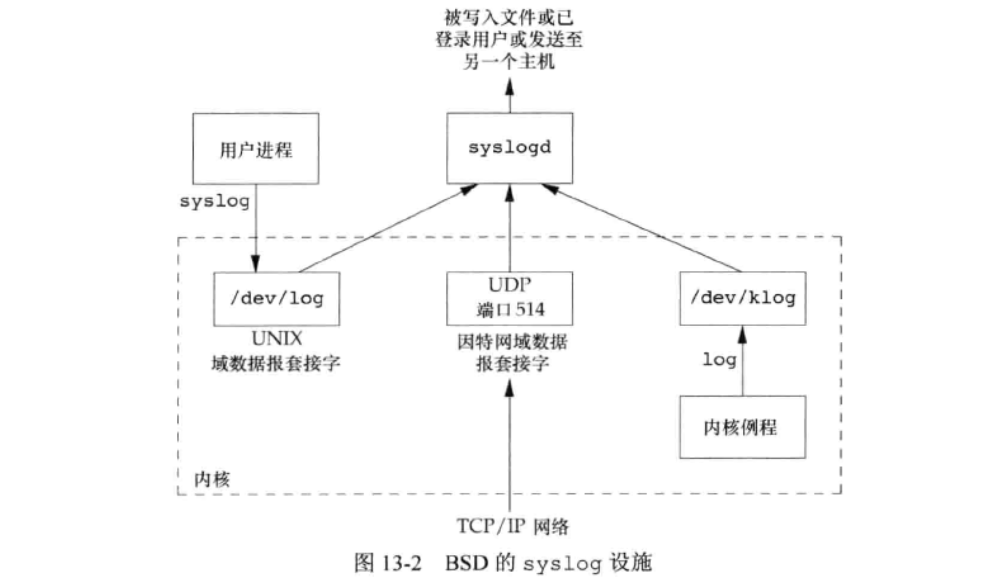

<!DOCTYPE html>
<html lang="en">

<head>
  <meta charset="utf-8" />
   
  <meta name="keywords" content="生活,旅行,思考,代码,博客" />
   
  <meta name="description" content="一座孤岛" />
  
  <meta name="viewport" content="width=device-width, initial-scale=1, maximum-scale=1" />
  <title>
    《APUE》ch13——守护进程 |  akaQin&#39;s Blog
  </title>
  <meta name="generator" content="hexo-theme-yilia-plus">
  
  <link rel="shortcut icon" href="/favicon.ico" />
  
  
<link rel="stylesheet" href="/css/style.css">

  
<script src="/js/pace.min.js"></script>


  

  

<link rel="alternate" href="/atom.xml" title="akaQin's Blog" type="application/atom+xml">
</head>

</html>

<body>
  <div id="app">
    <main class="content">
      <section class="outer">
  <article id="post-《APUE》ch13——守护进程" class="article article-type-post" itemscope
  itemprop="blogPost" data-scroll-reveal>

  <div class="article-inner">
    
    <header class="article-header">
       
<h1 class="article-title sea-center" style="border-left:0" itemprop="name">
  《APUE》ch13——守护进程
</h1>
  

    </header>
    

    
    <div class="article-meta">
      <a href="/2020/03/10/%E3%80%8AAPUE%E3%80%8Bch13%E2%80%94%E2%80%94%E5%AE%88%E6%8A%A4%E8%BF%9B%E7%A8%8B/" class="article-date">
  <time datetime="2020-03-10T13:39:09.000Z" itemprop="datePublished">2020-03-10</time>
</a>
      
  <div class="article-category">
    <a class="article-category-link" href="/categories/%E3%80%8AAPUE%E3%80%8B%E7%AC%94%E8%AE%B0/">《APUE》笔记</a>
  </div>

      
      
<div class="word_count">
    <span class="post-time">
        <span class="post-meta-item-icon">
            <i class="ri-quill-pen-line"></i>
            <span class="post-meta-item-text"> 字数统计:</span>
            <span class="post-count">872字</span>
        </span>
    </span>

    <span class="post-time">
        &nbsp; | &nbsp;
        <span class="post-meta-item-icon">
            <i class="ri-book-open-line"></i>
            <span class="post-meta-item-text"> 阅读时长≈</span>
            <span class="post-count">3分钟</span>
        </span>
    </span>
</div>

      
    </div>
    

    
    
    <div class="tocbot"></div>


    

    
    <div class="article-entry" itemprop="articleBody">
      


      

      
      <p>守护进程（daemon）是生存期长的一种进程。它们常常在系统引导装入时启动，仅在系统关闭时才终止。守护进程没有控制终端，终端名为问号。后台运行，大多数都以超级用户（root）特权运行。用户层守护进程的父进程是init。</p>
<h2 id="编程规则"><a href="#编程规则" class="headerlink" title="编程规则"></a>编程规则</h2><ol>
<li>调用umask将文件模式创建屏蔽字设置为一个已知值（通常是0）。</li>
<li>调用fork，然后使父进程exit。</li>
<li>调用setsid创建一个新会话。使调用进程：（a）成为新会话的首进程，（b）成为一个新进程组的组长进程，（c）没有控制终端。</li>
<li>将当前工作目录更改为根目录。避免文件系统被卸载。</li>
<li>关闭不再需要的文件描述符。</li>
<li>某些守护进程打开/dev/null使其具有文件描述符0、1、2，这样任何一个试图读/写标准输入/输出/错误的库例程都不会产生任何效果。</li>
</ol>
<a id="more"></a>

<figure class="highlight c"><table><tr><td class="gutter"><pre><span class="line">1</span><br><span class="line">2</span><br><span class="line">3</span><br><span class="line">4</span><br><span class="line">5</span><br><span class="line">6</span><br><span class="line">7</span><br><span class="line">8</span><br><span class="line">9</span><br><span class="line">10</span><br><span class="line">11</span><br><span class="line">12</span><br><span class="line">13</span><br><span class="line">14</span><br><span class="line">15</span><br><span class="line">16</span><br><span class="line">17</span><br><span class="line">18</span><br><span class="line">19</span><br><span class="line">20</span><br><span class="line">21</span><br><span class="line">22</span><br><span class="line">23</span><br><span class="line">24</span><br><span class="line">25</span><br><span class="line">26</span><br><span class="line">27</span><br><span class="line">28</span><br><span class="line">29</span><br><span class="line">30</span><br><span class="line">31</span><br><span class="line">32</span><br><span class="line">33</span><br><span class="line">34</span><br><span class="line">35</span><br><span class="line">36</span><br><span class="line">37</span><br><span class="line">38</span><br><span class="line">39</span><br><span class="line">40</span><br><span class="line">41</span><br><span class="line">42</span><br><span class="line">43</span><br><span class="line">44</span><br><span class="line">45</span><br><span class="line">46</span><br><span class="line">47</span><br><span class="line">48</span><br></pre></td><td class="code"><pre><span class="line"><span class="function"><span class="keyword">void</span> <span class="title">dameonize</span><span class="params">(<span class="keyword">const</span> <span class="keyword">char</span> *cmd)</span></span></span><br><span class="line"><span class="function"></span>&#123;</span><br><span class="line">    <span class="keyword">pid_t</span> pid;</span><br><span class="line">    <span class="class"><span class="keyword">struct</span> <span class="title">rlimit</span> <span class="title">rl</span>;</span></span><br><span class="line">    <span class="keyword">int</span> fd0, fd1, fd2;</span><br><span class="line"></span><br><span class="line">    <span class="comment">//1 关闭屏蔽字</span></span><br><span class="line">    umask(<span class="number">0</span>);</span><br><span class="line"></span><br><span class="line">    <span class="comment">//2 fork，父进程退出</span></span><br><span class="line">    <span class="keyword">if</span> ((pid = fork()) &lt; <span class="number">0</span>) &#123;</span><br><span class="line">        err_sys(<span class="string">"error"</span>);</span><br><span class="line">    &#125; <span class="keyword">else</span> <span class="keyword">if</span> (pid &gt; <span class="number">0</span>) &#123;</span><br><span class="line">        <span class="built_in">exit</span>(<span class="number">0</span>);</span><br><span class="line">    &#125;</span><br><span class="line"></span><br><span class="line">    <span class="comment">//3 建立新会话，使调用进程成为会话首进程和组长进程，且没有控制终端</span></span><br><span class="line">    setsid();</span><br><span class="line"></span><br><span class="line">    <span class="comment">//4 改变当前工作目录为根目录</span></span><br><span class="line">    <span class="keyword">if</span> (chdir(<span class="string">"/"</span>) &lt; <span class="number">0</span>) &#123;</span><br><span class="line">        err_sys(<span class="string">"error"</span>);</span><br><span class="line">    &#125;</span><br><span class="line"></span><br><span class="line"></span><br><span class="line">    <span class="comment">// 关闭所有描述符</span></span><br><span class="line">    <span class="keyword">if</span> (getrlimit(RLIMIT_NOFILE, &amp;rl) != <span class="number">0</span>) &#123;</span><br><span class="line">        err_sys(<span class="string">"error"</span>);</span><br><span class="line">    &#125;</span><br><span class="line">    <span class="keyword">if</span> (rl.rlim_max == RLIM_INFINITY) &#123;</span><br><span class="line">        rl.rlim_max = <span class="number">1024</span>;</span><br><span class="line">    &#125;</span><br><span class="line">    <span class="keyword">for</span> (<span class="keyword">int</span> i = <span class="number">0</span>; i &lt; rl.rlim_max; ++i) &#123;</span><br><span class="line">        <span class="built_in">close</span>(i);</span><br><span class="line">    &#125;</span><br><span class="line"></span><br><span class="line">    <span class="comment">// Attach file descriptors 0, 1, and 2 to /dev/null.  </span></span><br><span class="line">    fd0 = <span class="built_in">open</span>(<span class="string">"/dev/null"</span>, O_RDWR);</span><br><span class="line">    fd1 = dup(fd0);</span><br><span class="line">    fd2 = dup(fd0);</span><br><span class="line"></span><br><span class="line">    <span class="comment">// optional: Initialize the log file.</span></span><br><span class="line">    openlog(cmd, LOG_CONS, LOG_DAEMON);</span><br><span class="line">    <span class="keyword">if</span> (fd0 != <span class="number">0</span> || fd1 != <span class="number">1</span> || fd2 != <span class="number">2</span>) &#123;</span><br><span class="line">        syslog(LOG_ERR, <span class="string">"unexpected file descriptors %d %d %d"</span>, fd0, fd1, fd2);</span><br><span class="line">        <span class="built_in">exit</span>(<span class="number">1</span>);</span><br><span class="line">    &#125;</span><br><span class="line">&#125;</span><br></pre></td></tr></table></figure>

<h2 id="出错记录"><a href="#出错记录" class="headerlink" title="出错记录"></a>出错记录</h2><p>syslog 是一个用于集中记录所有守护进程出错记录的设施，它自身的守护进程是syslogd，该设施的接口是syslog函数。<br><br>有3种方法产生日志消息，syslogd守护进程读取所有3种格式的日志消息：</p>
<ol>
<li>内核例程调用log函数。</li>
<li>大多数用户进程（守护进程）调用syslog函数产生日志消息。这使消息被发送至UNIX域数据报套接字/dev/log。</li>
<li>无论用户进程在此主机上还是通过TCP/IP网络连接的其他主机上，都可将日志消息发向UDP端口514.</li>
</ol>
<h2 id="单例守护进程"><a href="#单例守护进程" class="headerlink" title="单例守护进程"></a>单例守护进程</h2><p>文件和记录锁提供了一种方便的互斥机制用于实现单例.</p>
<figure class="highlight c"><table><tr><td class="gutter"><pre><span class="line">1</span><br><span class="line">2</span><br><span class="line">3</span><br><span class="line">4</span><br><span class="line">5</span><br><span class="line">6</span><br><span class="line">7</span><br><span class="line">8</span><br><span class="line">9</span><br><span class="line">10</span><br><span class="line">11</span><br><span class="line">12</span><br><span class="line">13</span><br><span class="line">14</span><br><span class="line">15</span><br><span class="line">16</span><br><span class="line">17</span><br><span class="line">18</span><br><span class="line">19</span><br><span class="line">20</span><br><span class="line">21</span><br><span class="line">22</span><br><span class="line">23</span><br><span class="line">24</span><br><span class="line">25</span><br><span class="line">26</span><br><span class="line">27</span><br><span class="line">28</span><br><span class="line">29</span><br></pre></td><td class="code"><pre><span class="line"></span><br><span class="line"><span class="meta">#<span class="meta-keyword">define</span> LOCKFILE <span class="meta-string">"/var/run/daemon.pid"</span></span></span><br><span class="line"><span class="meta">#<span class="meta-keyword">define</span> LOCKMODE (S_IRUSR|S_IWUSR|S_IRGRP|S_IROTH)</span></span><br><span class="line"></span><br><span class="line"><span class="function"><span class="keyword">extern</span> <span class="keyword">int</span> <span class="title">lockfile</span><span class="params">(<span class="keyword">int</span>)</span></span>;</span><br><span class="line"></span><br><span class="line"><span class="function"><span class="keyword">int</span> <span class="title">already_running</span><span class="params">(<span class="keyword">void</span>)</span></span></span><br><span class="line"><span class="function"></span>&#123;</span><br><span class="line">	<span class="keyword">int</span>		fd;</span><br><span class="line">	<span class="keyword">char</span>	buf[<span class="number">16</span>];</span><br><span class="line"></span><br><span class="line">	fd = <span class="built_in">open</span>(LOCKFILE, O_RDWR|O_CREAT, LOCKMODE);</span><br><span class="line">	<span class="keyword">if</span> (fd &lt; <span class="number">0</span>) &#123;</span><br><span class="line">		syslog(LOG_ERR, <span class="string">"can't open %s: %s"</span>, LOCKFILE, strerror(errno));</span><br><span class="line">		<span class="built_in">exit</span>(<span class="number">1</span>);</span><br><span class="line">	&#125;</span><br><span class="line">	<span class="keyword">if</span> (lockfile(fd) &lt; <span class="number">0</span>) &#123;</span><br><span class="line">		<span class="keyword">if</span> (errno == EACCES || errno == EAGAIN) &#123;</span><br><span class="line">			<span class="built_in">close</span>(fd);</span><br><span class="line">			<span class="keyword">return</span>(<span class="number">1</span>);</span><br><span class="line">		&#125;</span><br><span class="line">		syslog(LOG_ERR, <span class="string">"can't lock %s: %s"</span>, LOCKFILE, strerror(errno));</span><br><span class="line">		<span class="built_in">exit</span>(<span class="number">1</span>);</span><br><span class="line">	&#125;</span><br><span class="line">	ftruncate(fd, <span class="number">0</span>);</span><br><span class="line">	<span class="built_in">sprintf</span>(buf, <span class="string">"%ld"</span>, (<span class="keyword">long</span>)getpid());</span><br><span class="line">	<span class="built_in">write</span>(fd, buf, <span class="built_in">strlen</span>(buf)+<span class="number">1</span>);</span><br><span class="line">	<span class="keyword">return</span>(<span class="number">0</span>);</span><br><span class="line">&#125;</span><br></pre></td></tr></table></figure>

<h2 id="守护进程的惯例"><a href="#守护进程的惯例" class="headerlink" title="守护进程的惯例"></a>守护进程的惯例</h2><ul>
<li>若守护进程使用锁文件，那么该文件通常存储在/var/run目录中。</li>
<li>若守护进程支持配置选项，那么配置文件通常存放在/etc目录中。</li>
<li>守护进程可以命令行启动，但它们通常是系由系统初始化脚本之一启动的。</li>
<li>若一个首进程有一个配置文件，那么当该守护进程启动时会读该文件，之后不再查看。若想reload可以使用SIGHUP信号。</li>
</ul>

      
      <!-- reward -->
      
      <div id="reward-btn">
        打赏
      </div>
      
    </div>
    

      <!-- copyright -->
      
        <div class="declare">
          <ul class="post-copyright">
            <li>
              <i class="ri-copyright-line"></i>
              <strong>版权声明： </strong s>
              本博客所有文章除特别声明外，均采用 <a href="https://www.apache.org/licenses/LICENSE-2.0.html" rel="external nofollow"
                target="_blank">Apache License 2.0</a> 许可协议。转载请注明出处！
            </li>
          </ul>
        </div>
        
    <footer class="article-footer">
      
          
<div class="share-btn">
      <span class="share-sns share-outer">
        <i class="ri-share-forward-line"></i>
        分享
      </span>
      <div class="share-wrap">
        <i class="arrow"></i>
        <div class="share-icons">
          
          <a class="weibo share-sns" href="javascript:;" data-type="weibo">
            <i class="ri-weibo-fill"></i>
          </a>
          <a class="weixin share-sns wxFab" href="javascript:;" data-type="weixin">
            <i class="ri-wechat-fill"></i>
          </a>
          <a class="qq share-sns" href="javascript:;" data-type="qq">
            <i class="ri-qq-fill"></i>
          </a>
          <a class="douban share-sns" href="javascript:;" data-type="douban">
            <i class="ri-douban-line"></i>
          </a>
          <!-- <a class="qzone share-sns" href="javascript:;" data-type="qzone">
            <i class="icon icon-qzone"></i>
          </a> -->
          
          <a class="facebook share-sns" href="javascript:;" data-type="facebook">
            <i class="ri-facebook-circle-fill"></i>
          </a>
          <a class="twitter share-sns" href="javascript:;" data-type="twitter">
            <i class="ri-twitter-fill"></i>
          </a>
          <a class="google share-sns" href="javascript:;" data-type="google">
            <i class="ri-google-fill"></i>
          </a>
        </div>
      </div>
</div>

<div class="wx-share-modal">
    <a class="modal-close" href="javascript:;"><i class="ri-close-circle-line"></i></a>
    <p>扫一扫，分享到微信</p>
    <div class="wx-qrcode">
      
    </div>
</div>

<div id="share-mask"></div>
      
      
  <ul class="article-tag-list" itemprop="keywords"><li class="article-tag-list-item"><a class="article-tag-list-link" href="/tags/daemon/" rel="tag">daemon</a></li></ul>


    </footer>

  </div>

  
  
  <nav class="article-nav">
    
      <a href="/2020/03/20/%E3%80%8AAPUE%E3%80%8Bch14%E2%80%94%E2%80%94%E9%AB%98%E7%BA%A7I-O/" class="article-nav-link">
        <strong class="article-nav-caption">上一篇</strong>
        <div class="article-nav-title">
          
            《APUE》ch14——高级I/O
          
        </div>
      </a>
    
    
      <a href="/2020/03/08/vnode%E4%B8%8Einode%E5%8C%BA%E5%88%AB/" class="article-nav-link">
        <strong class="article-nav-caption">下一篇</strong>
        <div class="article-nav-title">vnode与inode区别</div>
      </a>
    
  </nav>


  

  
  
<!-- valine评论 -->
<div id="vcomments-box">
    <div id="vcomments">
    </div>
</div>
<script src="//cdn1.lncld.net/static/js/3.0.4/av-min.js"></script>
<script src='https://cdn.jsdelivr.net/npm/valine@1.3.10/dist/Valine.min.js'></script>
<script>
    new Valine({
        el: '#vcomments',
        app_id: 'X2Yrs2HgM1dBr94LBlfP7Jsj-gzGzoHsz',
        app_key: 'x2WQjNYF5CQseEAN1iSqXOLQ',
        path: window.location.pathname,
        notify: 'true',
        verify: 'false',
        avatar: 'mp',
        placeholder: '给我的文章加点评论吧~',
        recordIP: true
    });
    const infoEle = document.querySelector('#vcomments .info');
    if (infoEle && infoEle.childNodes && infoEle.childNodes.length > 0) {
        infoEle.childNodes.forEach(function (item) {
            item.parentNode.removeChild(item);
        });
    }
</script>
<style>
    #vcomments-box {
        padding: 5px 30px;
    }

    @media screen and (max-width: 800px) {
        #vcomments-box {
            padding: 5px 0px;
        }
    }

    #vcomments-box #vcomments {
        background-color: #fff;
    }

    .v .vlist .vcard .vh {
        padding-right: 20px;
    }

    .v .vlist .vcard {
        padding-left: 10px;
    }
</style>

  

  
  
  

</article>

</section>
      <footer class="footer">
  <div class="outer">
    <ul class="list-inline">
      <li>
        &copy;
        2019-2020
        Aaron Qin
      </li>
      <li>
        
      </li>
    </ul>
    <ul class="list-inline">
      <li>
        
        
        <span>
  <i>PV:<span id="busuanzi_value_page_pv"></span></i>
  <i>UV:<span id="busuanzi_value_site_uv"></span></i>
</span>
        
      </li>
      <li>
        <!-- cnzz统计 -->
        
      </li>
    </ul>
  </div>
</footer>
    <div class="to_top">
        <div class="totop" id="totop">
  <i class="ri-arrow-up-line"></i>
</div>
      </div>
    </main>
      <aside class="sidebar">
        <button class="navbar-toggle"></button>
<nav class="navbar">
  
  <div class="logo">
    <a href="/"></a>
  </div>
  
  <ul class="nav nav-main">
    
    <li class="nav-item">
      <a class="nav-item-link" href="/">主页</a>
    </li>
    
    <li class="nav-item">
      <a class="nav-item-link" href="/archives">归档</a>
    </li>
    
    <li class="nav-item">
      <a class="nav-item-link" href="/categories">分类</a>
    </li>
    
    <li class="nav-item">
      <a class="nav-item-link" href="/tags">标签</a>
    </li>
    
    <li class="nav-item">
      <a class="nav-item-link" href="/about/me">关于我</a>
    </li>
    
  </ul>
</nav>
<nav class="navbar navbar-bottom">
  <ul class="nav">
    <li class="nav-item">
      
      <a class="nav-item-link nav-item-search"  title="Search">
        <i class="ri-search-line"></i>
      </a>
      
      
      <a class="nav-item-link" target="_blank" href="/atom.xml" title="RSS Feed">
        <i class="ri-rss-line"></i>
      </a>
      
    </li>
  </ul>
</nav>
<div class="search-form-wrap">
  <div class="local-search local-search-plugin">
  <input type="search" id="local-search-input" class="local-search-input" placeholder="Search...">
  <div id="local-search-result" class="local-search-result"></div>
</div>
</div>
      </aside>
      <div id="mask"></div>

<!-- #reward -->
<div id="reward">
  <span class="close"><i class="ri-close-line"></i></span>
  <p class="reward-p"><i class="ri-cup-line"></i>请我喝杯咖啡吧~</p>
  <div class="reward-box">
    
    <div class="reward-item">
      
      <span class="reward-type">支付宝</span>
    </div>
    
    
    <div class="reward-item">
      
      <span class="reward-type">微信</span>
    </div>
    
  </div>
</div>
      
<script src="/js/jquery-2.0.3.min.js"></script>


<script src="/js/jquery.justifiedGallery.min.js"></script>


<script src="/js/lazyload.min.js"></script>


<script src="/js/busuanzi-2.3.pure.min.js"></script>


<script src="/js/share.js"></script>


<script src="/fancybox/jquery.fancybox.min.js"></script>


<script>
  try {
    var typed = new Typed("#subtitle", {
    strings: ['面朝大海，春暖花开','愿你一生努力，一生被爱','想要的都拥有，得不到的都释怀'],
    startDelay: 0,
    typeSpeed: 200,
    loop: true,
    backSpeed: 100,
    showCursor: true
    });
  } catch (err) {
  }
  
</script>


<script src="/js/tocbot.min.js"></script>

<script>
  // Tocbot_v4.7.0  http://tscanlin.github.io/tocbot/
  tocbot.init({
    tocSelector: '.tocbot',
    contentSelector: '.article-entry',
    headingSelector: 'h1, h2, h3, h4, h5, h6',
    hasInnerContainers: true,
    scrollSmooth: true,
    scrollContainer:'main',
    positionFixedSelector: '.tocbot',
    positionFixedClass: 'is-position-fixed',
    fixedSidebarOffset: 'auto',
    onClick: (e) => {
      $('.toc-link').removeClass('is-active-link');
      $(`a[href=${e.target.hash}]`).addClass('is-active-link');
      $(e.target.hash).scrollIntoView();
      return false;
    }
  });
</script>


<script>
  var ayerConfig = {
    mathjax: false
  }
</script>


<script src="/js/ayer.js"></script>


<script src="https://cdn.jsdelivr.net/npm/jquery-modal@0.9.2/jquery.modal.min.js"></script>
<link rel="stylesheet" href="https://cdn.jsdelivr.net/npm/jquery-modal@0.9.2/jquery.modal.min.css">


<!-- Root element of PhotoSwipe. Must have class pswp. -->
<div class="pswp" tabindex="-1" role="dialog" aria-hidden="true">

    <!-- Background of PhotoSwipe. 
         It's a separate element as animating opacity is faster than rgba(). -->
    <div class="pswp__bg"></div>

    <!-- Slides wrapper with overflow:hidden. -->
    <div class="pswp__scroll-wrap">

        <!-- Container that holds slides. 
            PhotoSwipe keeps only 3 of them in the DOM to save memory.
            Don't modify these 3 pswp__item elements, data is added later on. -->
        <div class="pswp__container">
            <div class="pswp__item"></div>
            <div class="pswp__item"></div>
            <div class="pswp__item"></div>
        </div>

        <!-- Default (PhotoSwipeUI_Default) interface on top of sliding area. Can be changed. -->
        <div class="pswp__ui pswp__ui--hidden">

            <div class="pswp__top-bar">

                <!--  Controls are self-explanatory. Order can be changed. -->

                <div class="pswp__counter"></div>

                <button class="pswp__button pswp__button--close" title="Close (Esc)"></button>

                <button class="pswp__button pswp__button--share" style="display:none" title="Share"></button>

                <button class="pswp__button pswp__button--fs" title="Toggle fullscreen"></button>

                <button class="pswp__button pswp__button--zoom" title="Zoom in/out"></button>

                <!-- Preloader demo http://codepen.io/dimsemenov/pen/yyBWoR -->
                <!-- element will get class pswp__preloader--active when preloader is running -->
                <div class="pswp__preloader">
                    <div class="pswp__preloader__icn">
                        <div class="pswp__preloader__cut">
                            <div class="pswp__preloader__donut"></div>
                        </div>
                    </div>
                </div>
            </div>

            <div class="pswp__share-modal pswp__share-modal--hidden pswp__single-tap">
                <div class="pswp__share-tooltip"></div>
            </div>

            <button class="pswp__button pswp__button--arrow--left" title="Previous (arrow left)">
            </button>

            <button class="pswp__button pswp__button--arrow--right" title="Next (arrow right)">
            </button>

            <div class="pswp__caption">
                <div class="pswp__caption__center"></div>
            </div>

        </div>

    </div>

</div>

<link rel="stylesheet" href="https://cdn.jsdelivr.net/npm/photoswipe@4.1.3/dist/photoswipe.min.css">
<link rel="stylesheet" href="https://cdn.jsdelivr.net/npm/photoswipe@4.1.3/dist/default-skin/default-skin.css">
<script src="https://cdn.jsdelivr.net/npm/photoswipe@4.1.3/dist/photoswipe.min.js"></script>
<script src="https://cdn.jsdelivr.net/npm/photoswipe@4.1.3/dist/photoswipe-ui-default.min.js"></script>

<script>
    function viewer_init() {
        let pswpElement = document.querySelectorAll('.pswp')[0];
        let $imgArr = document.querySelectorAll(('.article-entry img:not(.reward-img)'))

        $imgArr.forEach(($em, i) => {
            $em.onclick = () => {
                // slider展开状态
                // todo: 这样不好，后面改成状态
                if (document.querySelector('.left-col.show')) return
                let items = []
                $imgArr.forEach(($em2, i2) => {
                    let img = $em2.getAttribute('data-idx', i2)
                    let src = $em2.getAttribute('data-target') || $em2.getAttribute('src')
                    let title = $em2.getAttribute('alt')
                    // 获得原图尺寸
                    const image = new Image()
                    image.src = src
                    items.push({
                        src: src,
                        w: image.width || $em2.width,
                        h: image.height || $em2.height,
                        title: title
                    })
                })
                var gallery = new PhotoSwipe(pswpElement, PhotoSwipeUI_Default, items, {
                    index: parseInt(i)
                });
                gallery.init()
            }
        })
    }
    viewer_init()
</script>


<script type="text/javascript" src="https://js.users.51.la/20544303.js"></script>
  </div>
</body>

</html>